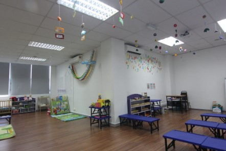
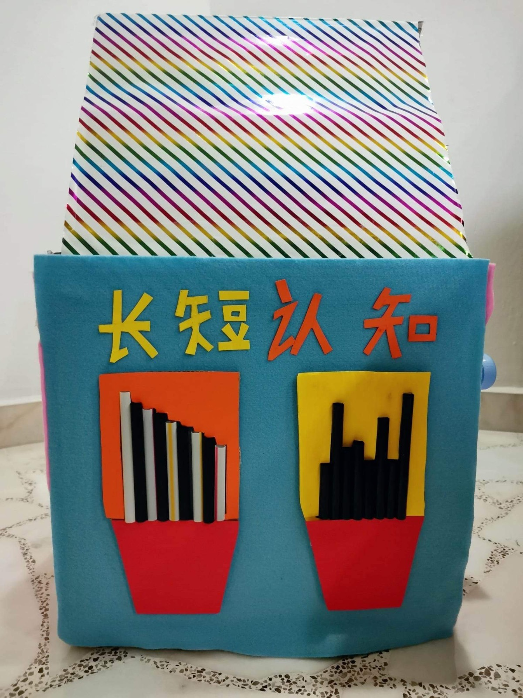
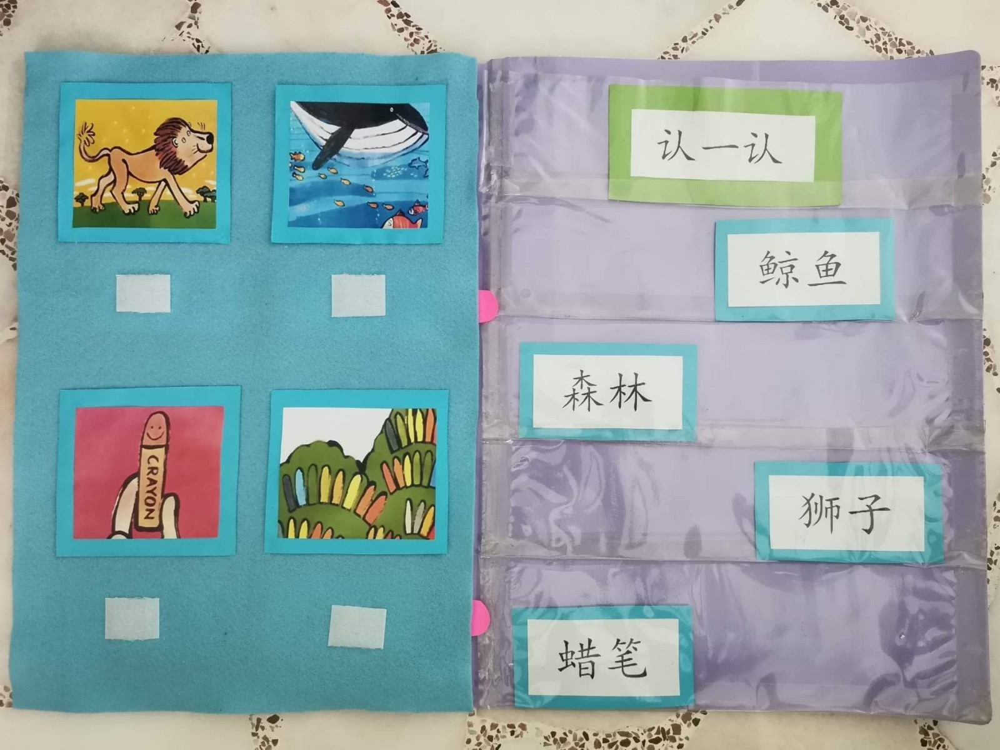

KLY INTERNATIONAL INSTITUTE
Home
About Us
Campus Facilities
Contact Us
Diploma in Chinese Language Teaching
Study Period:
- 2 years 3 months
Course Content:
- Introduction to Chinese Language and Literature Appreciation
- Theory of Teaching Chinese as a Foreign Language
- Psychology of Second Language Teaching and Learning Strategies
- Listening and Speaking Pedagogy
- Words and word teaching methods
- Reading and Reading Pedagogy
- Writing and Writing Pedagogy
- Rhetorical Devices and Writing Skills
- Chinese language classroom management and motivation, one-on-one teaching method
- Appreciation of New Malaysian Literature and Teaching Newspaper Reading
- Chinese language testing and assessment
- Mandarin Proficiency, Advanced Chinese and HSK Advanced Exam
- Internship
Course Entry Requirement:
- GCE "O" level Chinese C6 or above
- HSK 6
- KLY College of Education Chinese Language Test
- SPM / O-Levels: At least three subjects with distinction
Tuition Fee:
- SGD5200 per year
  
INFORMATION
Our operating hours:
Mon to Fri: 9am-6.30pm
Sat, Sun & PH: Closed
Our Campuses:
Ang Mo Kio 715, Ang Mo Kio Avenue 6, #02-4000, Singapore 560715
Jurong East 135, Jurong Gateway Road, #03-341, Singapore 600135
Yio Chu Kang 449 Yio Chu Kang Road, Singapore 805946
Course Inquires:
Click here for our full contact list.
Online enquiry:
Submit your online inquiry form here.
Student Portal:
Click here go to Student Portal.